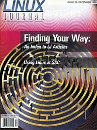

Shutdown Archive web server
Search:
Linux Journal
Issue #20/December 1995

Features
Using Linux at SSC/
Linux Journal
by Kevin Pierce
Find out how SSC uses Linux to produce all of its products, including this magazine.
Index of
LJ
Articles
A complete listing of articles from issues 1-19.
LJ
Readers' Choice
Linux Journal
readers rank their favorite Linux-related products.
News & Articles
Linux System Administration
Adding a New Disk to a Linux System
by Æleen Frisch
PracTcl Programming Tips: It's All a Matter of Timing
by Stephen Uhler
Reviews
Product Review
Caldera Network Desktop Preview 1
by Roger Scrafford
Book Review
The Future Does Not Compute
by Danny Yee
Columns
Letters to the Editor
Stop the Presses
Just Browsing
by Phil Hughes
Take Command
Finding Files and More
by Eric Goebelbecker
New Products
Kernel Korner
: Porting Linux to the DEC Alpha: The User Environment
by Jim Paradis
Archive Index
Shutdown Archive web server
Search:
Copyright © 1994 - 2018
Linux Journal
. All rights reserved.